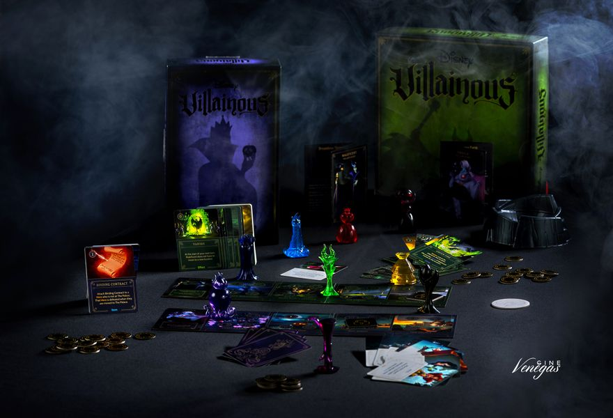
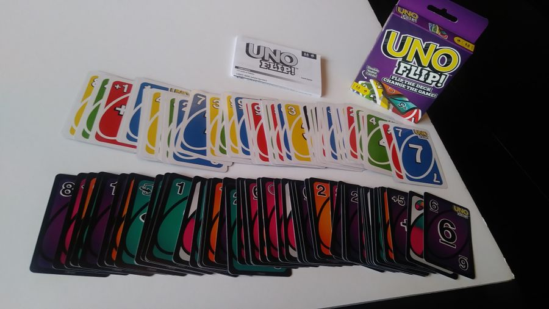
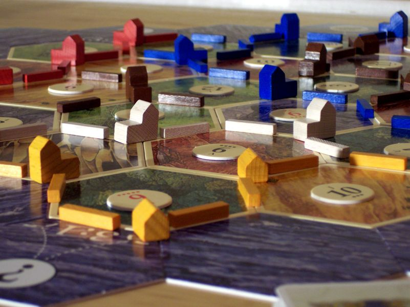
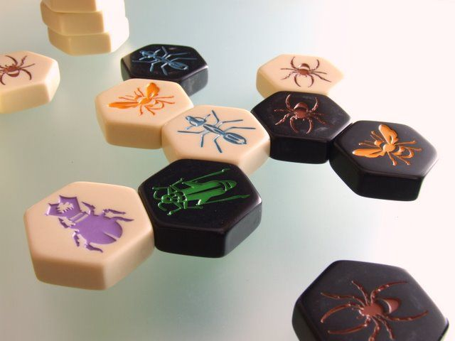
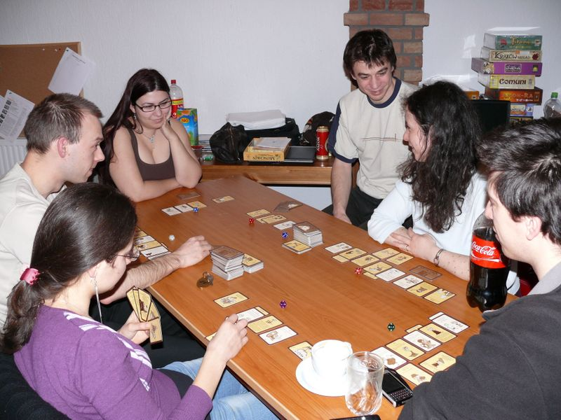
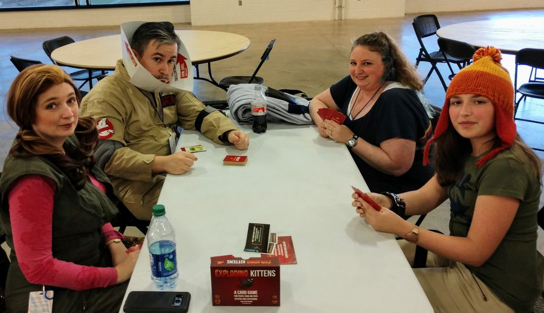
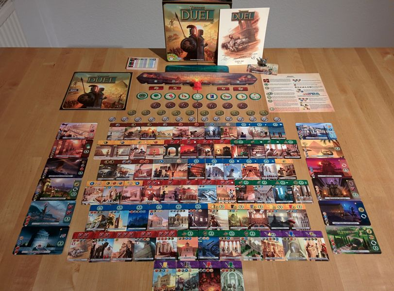
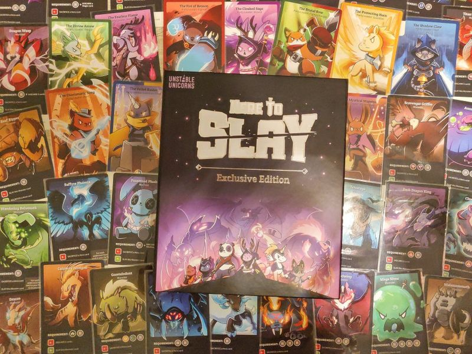
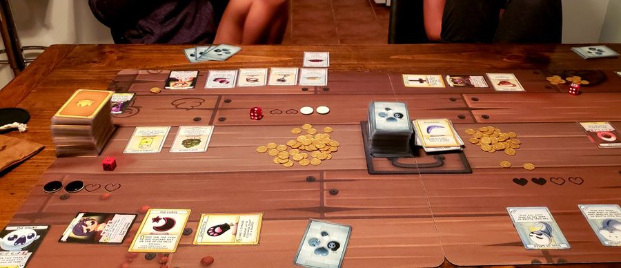

#10 Villainous
In Villainous, each player takes control of one of six Disney characters, each one a villain in a different Disney movie. Each player has their own villain deck, fate deck, player board, and 3D character.
On a turn, the active player moves their character to a different location on their player board, takes one or more of the actions visible on that space (often by playing cards from their hand), then refills their hand to four cards. Cards are allies, items, effects, conditions, and (for some characters) curses. You need to use your cards to fulfill your unique win condition.
One of the actions allows you to choose another player, draw two cards from that player's fate deck, then play one of them on that player's board, covering two of the four action spaces on one of that player's locations. The fate deck contains heroes, items, and effects from that villain's movie, and these cards allow other players to mess with that particular villain.
#9 Uno Flip (2019)
UNO gets a brand new twist in the new UNO Flip! card game. It essentially plays like regular UNO but with the addition of Flip cards. This UNO card deck is double-sided with a "light" side and a "dark" side. You start off playing with the light side, but if someone plays a Flip card, you have to switch to playing the dark side. And on the dark side, there are different action cards with stiffer penalties. Instead of a Draw One card, the dark side has a Draw Five card. Instead of a Skip Card, the dark side has a Skip Everyone card. You have to continue playing with the dark side until another Flip card is played.
If you don't know how to play UNO, each player takes a turn matching a card from their hand to the card on the top of the discard pile, either by number, color, or symbol. If you don't have a match, you must draw a card from the draw pile.
The symbols represent the action cards, such as Wild, Skip, Wild Draw 2, Draw One, and Reverse. This version also includes a Flip card that turns the cards to the dark side, which has the following actions: Draw Five, Reverse, Skip Everyone, Wild, Wild Draw Color, and Flip.
When you play your next-to-last card, you must yell "UNO!" to indicate you only have one card left. If you don't yell "UNO" and someone catches you, you must draw two cards. Once a player runs out of cards, the round is over, and that player receives points for all of the cards left in their opponents' hands. Play until one player reaches 500 points.
#8 Catan
In CATAN (formerly The Settlers of Catan), players try to be the dominant force on the island of Catan by building settlements, cities, and roads. On each turn dice are rolled to determine what resources the island produces. Players build by spending resources (sheep, wheat, wood, brick and ore) that are depicted by these resource cards; each land type, with the exception of the unproductive desert, produces a specific resource: hills produce brick, forests produce wood, mountains produce ore, fields produce wheat, and pastures produce sheep.
Setup includes randomly placing large hexagonal tiles (each showing a resource or the desert) in a honeycomb shape and surrounding them with water tiles, some of which contain ports of exchange. Number disks, which will correspond to die rolls (two 6-sided dice are used), are placed on each resource tile. Each player is given two settlements (think: houses) and roads (sticks) which are, in turn, placed on intersections and borders of the resource tiles. Players collect a hand of resource cards based on which hex tiles their last-placed house is adjacent to. A robber pawn is placed on the desert tile.
A turn consists of possibly playing a development card, rolling the dice, everyone (perhaps) collecting resource cards based on the roll and position of houses (or upgraded cities—think: hotels) unless a 7 is rolled, turning in resource cards (if possible and desired) for improvements, trading cards at a port, and trading resource cards with other players. If a 7 is rolled, the active player moves the robber to a new hex tile and steals resource cards from other players who have built structures adjacent to that tile.
Points are accumulated by building settlements and cities, having the longest road and the largest army (from some of the development cards), and gathering certain development cards that simply award victory points. When a player has gathered 10 points (some of which may be held in secret), he announces his total and claims the win.
#7 Hive
Hive is a highly addictive strategic game for two players that is not restricted by a board and can be played anywhere on any flat surface. Hive is made up of twenty two pieces, eleven black and eleven white, resembling a variety of creatures each with a unique way of moving.
With no setting up to do, the game begins when the first piece is placed down. As the subsequent pieces are placed this forms a pattern that becomes the playing surface (the pieces themselves become the board). Unlike other such games, the pieces are never eliminated and not all have to be played. The object of the game is to totally surround your opponent's queen, while at the same time trying to block your opponent from doing likewise to your queen. The player to totally surround his opponent's queen wins the game.
#6 Chess

Chess is a two-player, abstract strategy board game that represents medieval warfare on an 8x8 board with alternating light and dark squares. Opposing pieces, traditionally designated White and Black, are initially lined up on either side. Each type of piece has a unique form of movement and capturing occurs when a piece, via its movement, occupies the square of an opposing piece. Players take turns moving one of their pieces in an attempt to capture, attack, defend, or develop their positions. Chess games can end in checkmate, resignation, or one of several types of draws. Chess is one of the most popular games in the world, played by millions of people worldwide at home, in clubs, online, by correspondence, and in tournaments. Between two highly skilled players, chess can be a beautiful thing to watch, and a game can provide great entertainment even for novices. There is also a large literature of books and periodicals about chess, typically featuring games and commentary by chess masters.
The game has its origins in the Indian game Chaturanga, and became Shatranj when introduced to the Persians. The current form of the game emerged in the second half of the 15th century when the Persians brought Shatranj to Southern Europe. The tradition of organized competitive chess began in the 16th century. The first official World Chess Champion, Wilhelm Steinitz, claimed his title in 1886. The current World Champion is Magnus Carlsen, Norway. Chess is also a recognized sport of the International Olympic Committee.
#5 Munchkin
Munchkin is a satirical card game based on the clichés and oddities of Dungeons and Dragons and other role-playing games. Each player starts at level 1 and the winner is the first player to reach level 10. Players can acquire familiar D&D style character classes during the game which determine to some extent the cards they can play.
There are two types of cards - treasure and encounters. Each turn the current players 'kicks down the door' - drawing an encounter card from the deck. Usually this will involve battling a monster. Monsters have their own levels and players must try and overcome it using the levels, weapons and powers they have acquired during the game or run away. Other players can chose to help the player or hinder by adding extra monsters to the encounter. Defeating a monster will usually result in drawing treasure cards and acquiring levels. Being defeated by a monster results in "bad stuff" which usually involves losing levels and treasure.
#4 Exploding kittens
Exploding Kittens is a kitty-powered version of Russian Roulette. Players take turns drawing cards until someone draws an exploding kitten and loses the game. The deck is made up of cards that let you avoid exploding by peeking at cards before you draw, forcing your opponent to draw multiple cards, or shuffling the deck.
The game gets more and more intense with each card you draw because fewer cards left in the deck means a greater chance of drawing the kitten and exploding in a fiery ball of feline hyperbole.
#3 7 wonders duel
In many ways 7 Wonders Duel resembles its parent game 7 Wonders as over three ages players acquire cards that provide resources or advance their military or scientific development in order to develop a civilization and complete wonders.
What's different about 7 Wonders Duel is that, as the title suggests, the game is solely for two players, with the players not drafting cards simultaneously from hands of cards, but from a display of face-down and face-up cards arranged at the start of a round. A player can take a card only if it's not covered by any others, so timing comes into play as well as bonus moves that allow you to take a second card immediately. As in the original game, each card that you acquire can be built, discarded for coins, or used to construct a wonder.
Each player starts with four wonder cards, and the construction of a wonder provides its owner with a special ability. Only seven wonders can be built, though, so one player will end up short.
Players can purchase resources at any time from the bank, or they can gain cards during the game that provide them with resources for future building; as you acquire resources, the cost for those particular resources increases for your opponent, representing your dominance in this area.
A player can win 7 Wonders Duel in one of three ways: each time you acquire a military card, you advance the military marker toward your opponent's capital, giving you a bonus at certain positions; if you reach the opponent's capital, you win the game immediately; similarly, if you acquire any six of seven different scientific symbols, you achieve scientific dominance and win immediately; if none of these situations occurs, then the player with the most points at the end of the game wins.
#2 Here to Slay
Here to Slay is a competitive role-playing fantasy strategy card game that's all about assembling a party of Heroes and slaying monsters (and sometimes sabotaging your friends too) from the creators of Unstable Unicorns.
In this game, you’ll assemble a full party of heroes to slay dangerous monsters while working to avoid the sabotage of your foes. The game also includes items you can equip to your heroes, 1V1 challenge cards, and roll modifiers to tip the odds in your favor.
The first person to successfully slay three monsters, or build a full party with six classes, wins the game!
#1 The binding of issac: four souls
The official Binding of Isaac multiplayer card game, about sacrifice, betrayal and hoarding.
2-4 players take turns playing loot cards and using items to kill monsters that yield more items, loot, and sometimes souls. The first player to end their turn with 4 souls is the winner. Cooperation, barter, and betrayal is encouraged.